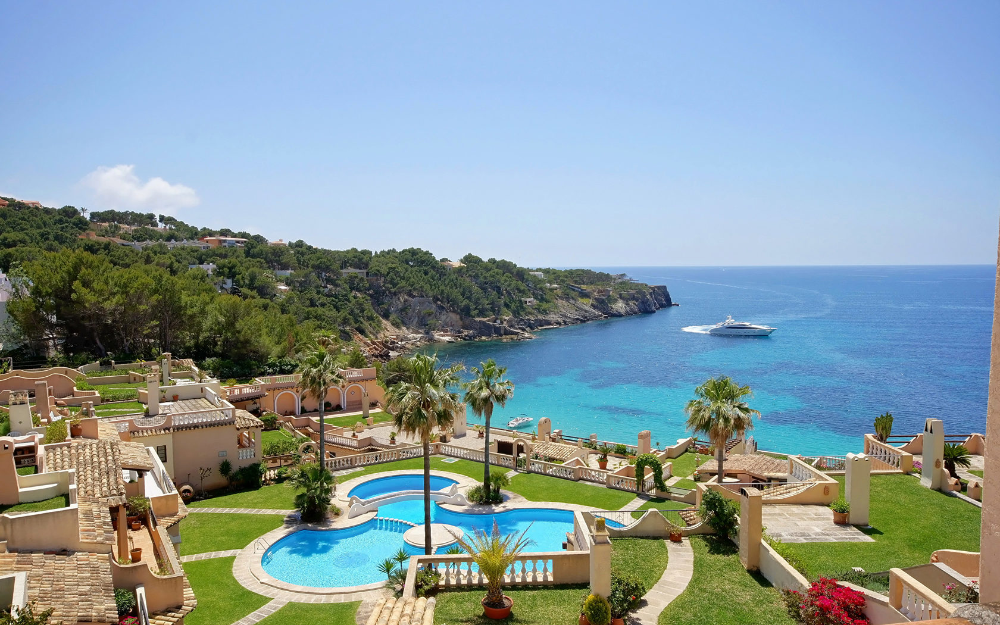
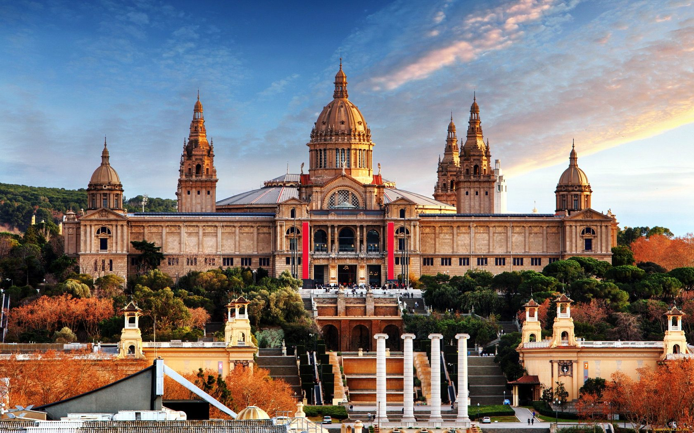
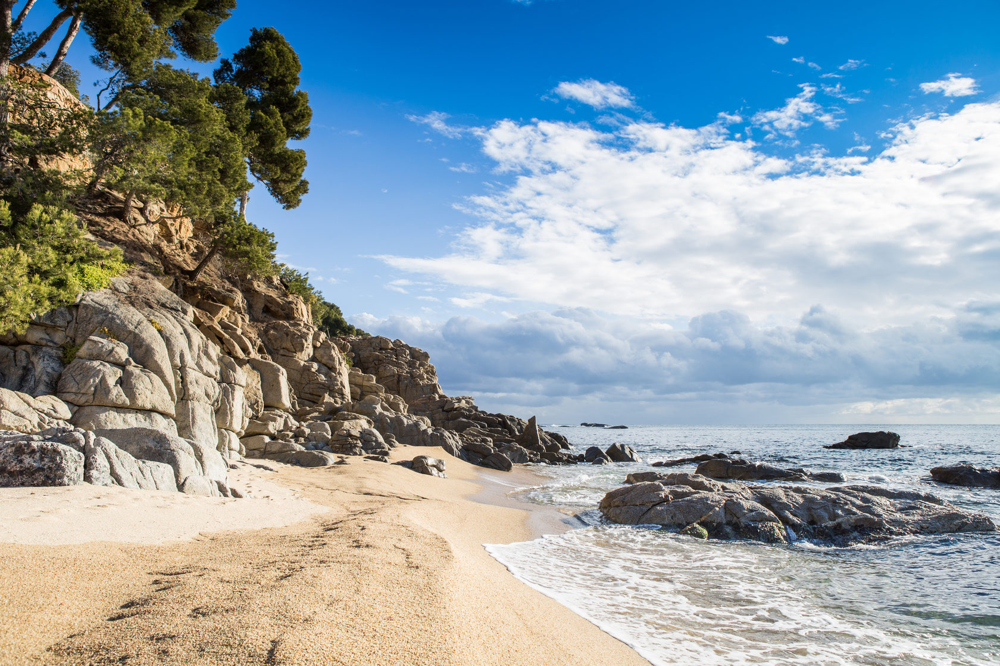
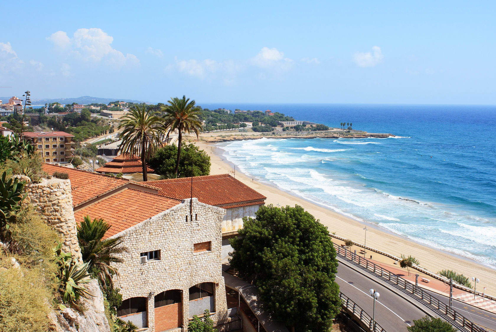
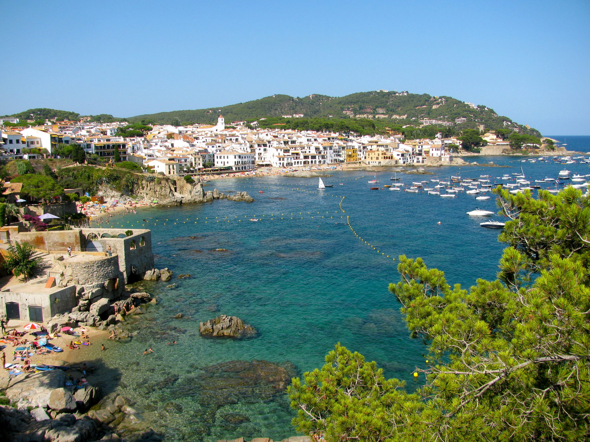
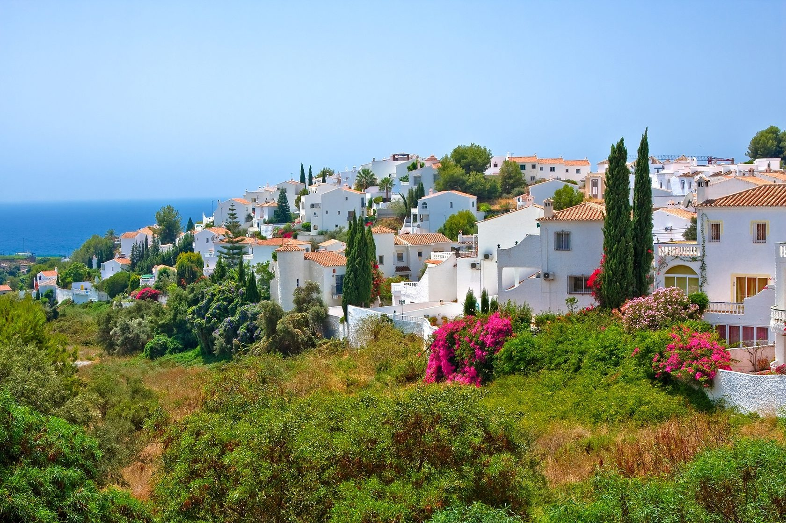
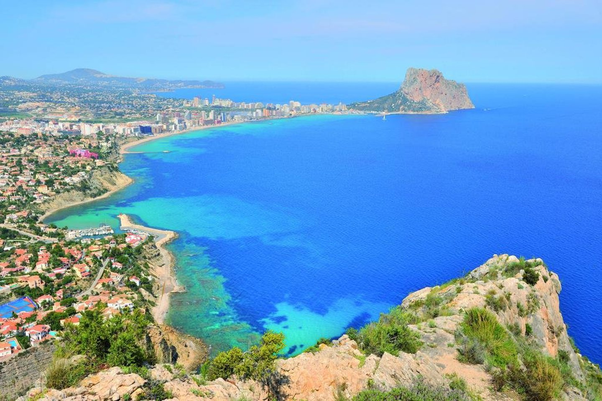
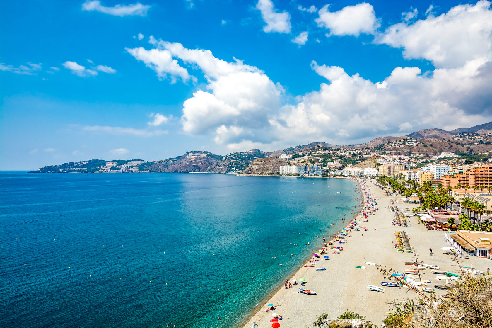
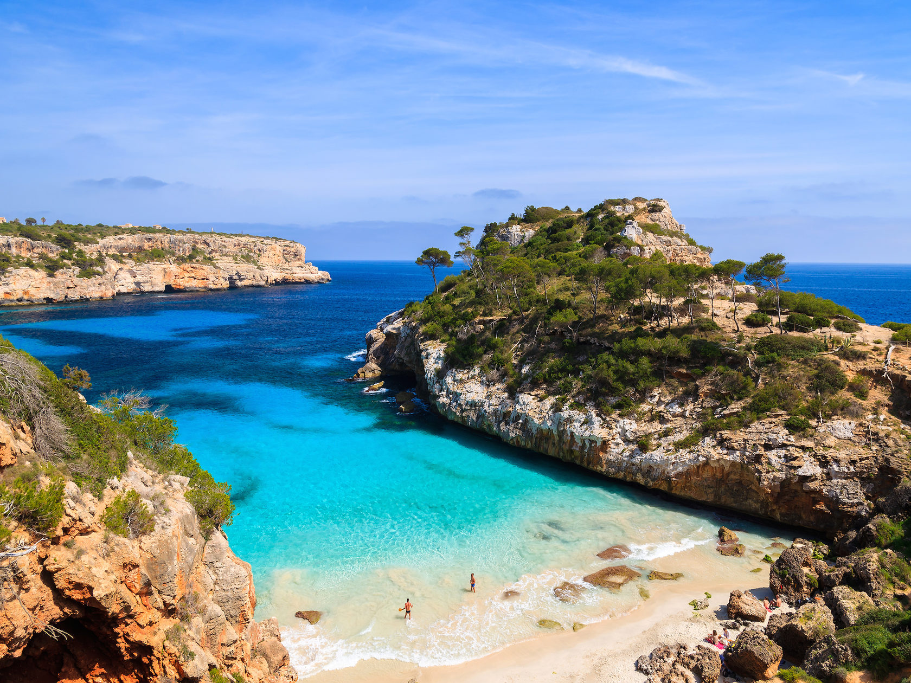
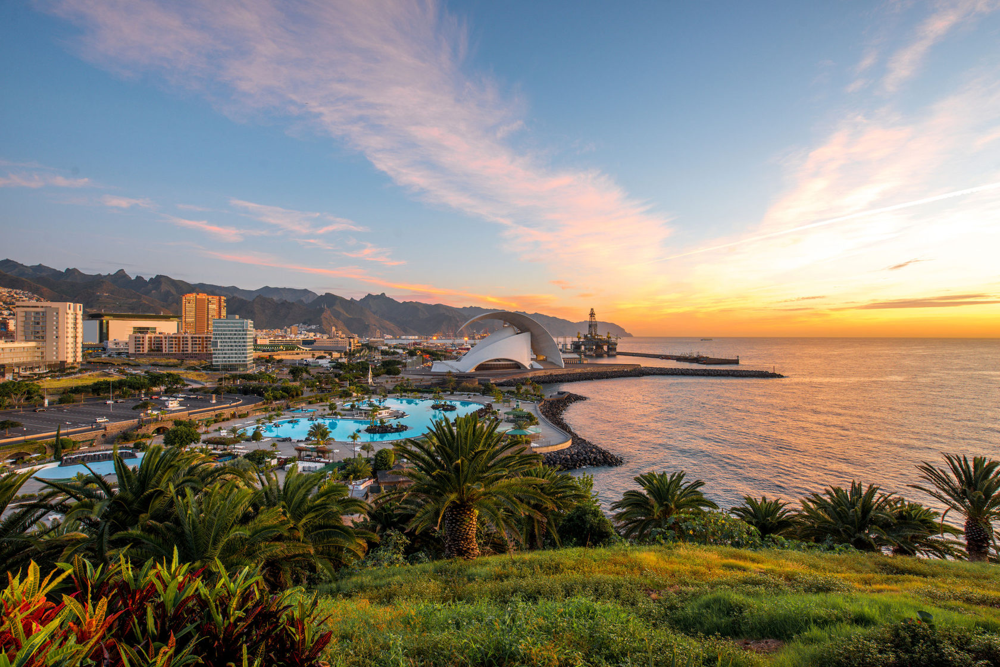

О стране

О стране
Королевство Испания расположено на юго-западе Европы и является членом Европейского союза. Территориально страна занимает большую часть Пиренейского полуострова, а также Канарские и Балеарские острова. На севере и западе берега Королевства омываются Атлантическим океаном, на юге и востоке – Средиземным морем. Столица страны – город Мадрид.
Испания, несомненно, является одним из главных культурных центров Европы. С каждым годом ее посещает все больше туристов. Кто-то приезжает погулять по старым извилистым улочкам, наслаждаясь архитектурными памятниками и шедеврами искусства великих мастеров, а кто-то понежиться под солнцем на лучших побережьях Средиземного моря и Атлантического океана.
Отличительной чертой этой европейской страны являются праздники, ставшие стилем жизни местного населения. Их проводят в больших городах и крохотных поселках, посвящают святым и небесным покровителям, знаменитым соотечественникам и «звездам» местного масштаба, временам года, спортивным достижениям, музыке и стихам. В каждом регионе есть по три официальных региональных праздника, а также еще по одному обязательному празднику на каждую провинцию и город. Кроме того, в каждом населенном пункте чествуют своего святого-покровителя, по случаю чего устраивается самый большой праздник года.
Отдыхать в Королевстве невероятно приятно и легко, ведь испанцы приветливы, доброжелательны, хлебосольны и всегда готовы развлекаться.
Барселона

БАРСЕЛОНА Барселона – один из красивейших европейских городов, возраст которого составляет более 2000 лет, обладает интересной и длинной историей, пропитанной легендами и тайнами. Столица Каталонии привлекает туристов не только своим архитектурным великолепием, но и особым духом свободы и независимости, который всегда выделял ее среди других городов Испании. Особенно притягательна Барселона в летний сезон, именно в этот период можно совместить культурный отдых с пляжным, а ночные развлечения с удачным шопингом.
Барселона - самый оживленный город Испании, жизнь тут бурлит круглые сутки: прогулки по бульварам, веселая беззаботность в клубах и барах, кружение по паркам и набережным. Сюда едут за вдохновением представители богемы со всего мира, отчасти потому, что в Барселоне творили такие великие мастера как Пабло Пикассо и Антонио Гауди. Кроме того, Барселона – крупнейший промышленный и торговый центр. Неповторимую атмосферу городу придает соседство современных зданий со старинными постройками, церквями и замками.
Климат. Мягкий средиземноморский климат с июня по сентябрь благоприятствует долгим прогулкам по городу и купанию в море. Средняя температура днем составляет +27°С, ночью +23°С, вода прогревается до +25°С.
Пляжи. Тем, кто предпочитает проводить отпуск на золотистом песке и в ласковой синеве морских волн, Барселона предлагает семь городских пляжей со всеми удобствами для отдыхающих: лежаками, душевыми, парковками, барами, ресторанами и возможностями для занятий водными видами спорта.
Знакомство с Барселоной лучше всего начать со знаменитого бульвара Ла Рамбла, сосредоточия магазинов, торговых лавок, баров и ресторанов. Ла Рамбла протянулась на 1,2 км от площади Каталонии до Старого Порта. Здесь можно встретить людей всех национальностей, возрастов и убеждений. В цветистости и гомоне бульвара отражается истинная Испания с ее очарованием и величием. Во время прогулки непременно стоит посетить Бокерию, старый рынок города, где вы найдете практически все: от хамона и колбасы чоризо до экзотических фруктов и невероятных деликатесов.
Одной из самых известных достопримечательностей Барселоны является Искупительный собор Святого Семейства. Архитектурный шедевр Гауди является неофициальным символом города. Полны архитектурных сюрпризов и другие творения гения, так создавая Дом Бальо и Дом Мила, художник нарочно избегал прямых линий и простого декора.
Обязательно побывайте в Парке Гуэль, включенном в список всемирного наследия ЮНЕСКО; архитектурном музее под открытым небом «Испанская деревня»; в Национальном музее изобразительных искусств на горе Монтжуик; в Музее Пикассо; на стадионе легендарного футбольного клуба «Барселона», а также в одном из самых лучших в Европе парке аттракционов «Порт Авентура». Туристам с детьми интересно будет посетить огромный аквариум и зоопарк Барселоны.
Рекомендуем отдых в Барселоне туристам, предпочитающим познакомиться с культурой Каталонии, совместив это с отдыхом на роскошных городских пляжах.
Коста-Брава

КОСТА-БРАВА
Туристический бум в Испании начался именно с побережья Коста-Брава – прибрежного района провинции Жироны. Первые европейские туристы приехали сюда в 1960-е гг., после чего туристическая лавина покатилась дальше на юг страны, навсегда изменив вид побережья. Коста-Брава пролегает на северо-востоке страны у подножия Пиренейских гор и простирается от города Бланес до границы с Францией в самой северной ее части. Здесь небольшие живописные бухты окружены скалами и пышной растительностью, а широкая полоса роскошных пляжей протянулась на 220 км.
Климат на побережье Коста-Брава отличается особой мягкостью на протяжении всего года. Июль и август – самые жаркие месяцы, средняя температура летом +25-28 °С, вода прогревается до +25 °C. Пляжный сезон длится с июня по октябрь.
Золотистые песчаные пляжи побережья, живописные бухты с лазурными водами и пологий вход делают курорты Коста-Брава особенно привлекательным для туристов, предпочитающих именно пляжный отдых. Побережье славится качеством своих пляжей, большинство из них отмечены «Голубым флагом», наградой за экологичность и высокие стандарты.
Самым ультрамодным курортом европейского значения является городок Ллорет-де-Мар с современными гостиницами, магазинами, ботаническими садами, спортивными комплексами, аквапарками и прочими развлекательными объектами. От городской суеты туристы предпочитают спасаться в небольшом рыбацком поселке Эль-Порт-де-ла-Сельва. Его неповторимый облик создают узкие улочки, колоритные ресторанчики, неторопливые туристы и совсем небольшой морской порт с баркасами. Элитный отдых предлагает курорт Эмпуриабра. Это самая крупная в Европе и в мире жилая акватория для частных яхт и катеров. Каменистые пляжи в первозданной чистоте и нетронутая цивилизацией природа сохранилась в поселке Кадакес. Курорт является излюбленным местом отдыха богемы, поэтому в маленьком портовом городке можно найти много художественных галерей и музеев. Неподалеку от Кадакеса расположена деревушка Порт Лигат, где некогда жил Сальвадор Дали. Морская гладь, окружающие залив скалы, рыбачья пристань, и крохотный пляж превратились в неизменный фон для его картин. По мнению местных жителей, самым красивым и романтичным местом побережья можно назвать рыбацкую деревню Калейя-де-Палафружель с ее белоснежными домиками, разноцветными лодками и развешенными после рыбной ловли сетями на песчаных пляжах. Идеальным для отдыха с детьми станет городок Тосса-де-Мар. Он находится в стороне от оживленных трасс и туристических маршрутов. Гурманам стоит поселиться на курорте Паламос, который славится своими семейными рыбными ресторанчиками.
Отдыхая в Коста-Браве, непременно посетите столицу провинции – средневековую Жирону. С одной стороны город огибает крепостная стена, возвышающаяся над постройками старинного квартала, с другой стороны вдоль реки Оньяр плотный ряд образуют разноцветные фасады домов эпохи модернизма. В недалеком прошлом горожане стали пристраивать к крепостной стене свои жилища, в итоге получился хаотичный и очаровательный архитектурный ансамбль. Сама река Оньяр украшена 10-ю мостами, которые соединяют старые кварталы города на одном берегу с новыми постройками на другом.
В городок Фигейрас со всего мира приезжают туристы, чтобы познакомиться с культурным наследием, которое оставил после себя самый богатый в мире художник и самый известный в мире каталонец – Сальвадор Дали. Дали родился, жил, творил и похоронен в Фигейрасе, где осуществил самый грандиозный проект своей жизни – «Театр-Музей». Он может понравиться или не понравиться, но едва ли оставит равнодушным.
Рекомендуем отдых на курортах Коста-Брава всем категориям туристов, особенно активным гостям, предпочитающим спортивно-развлекательный досуг, и семьям с детьми.
Коста-Дорада

КОСТА-ДОРАДА
Название курортной зоны с испанского языка переводится как «Золотой Берег» и получило свое название из-за многокилометровых песчаных пляжей, сверкающих в лучах солнца, словно мерцающая россыпь золота. Красивейшее побережье Коста-Дорада простирается на 200 км от Барселоны до провинции Таррагона и является идеальным местом семейного отдыха с детьми благодаря теплым неглубоким прибрежным водам Средиземного моря, мелкому песку и наличию разнообразных центров развлечений.
Климат побережья Коста-Дорада теплее, чем на большинстве курортов Испании, благодаря горам, которые защищают от ветра и циклонов с севера и запада.
Средняя температура воздуха в летний сезон около +27-30 °С, воды – +26 °С.
Самый популярный курорт не только Коста-Дорада, но и всей Каталонии – город Салоу. Туристов сюда привлекают километровые пляжи из мелкого и мягкого песка, уютные бухты у подножия скал мыса Салоу, множество магазинов, ресторанов и кафе под открытым небом. Этот город известен самым большим в Испании тематическим парком развлечений «Порт Авентура». Туристы с детьми будут в восторге от водного парка «Акваполис». Ночная жизнь города проходит в многочисленных ресторанах, кафе, дискотеках и ночных клубах.
Рядом с Ла Пинеда находится древний город Виласека, известный со времен римлян и сохранивший особую атмосферу старины. Здесь можно увидеть башни эпохи средневековья, церковь XVI века с оригинальной колокольней, замок Дель-Конде, построенный вокруг башни Де-Сольсина и элегантную часовню, выполненную в стиле барокко. Сегодня в историческом квартале города разместились традиционные уютные рестораны и таверны, а также разнообразные магазины сувениров и изделий мастеров региона.
Еще один популярный туристический центр Коста-Дорада – старинный рыбацкий город-порт Камбрильс, который условно можно условно разделить на две части, причудливо контрастирующие между собой. Восходящий к средневековью исторический центр города с его узкими улочками и небольшими тесно стоящими постройками соседствует с портовым районом – современной частью города с главной набережной, где расположены отели, коммерческие центры и различные развлекательные заведения. Камбрильс, расположенный немного южнее города Салоу, славится своим рыбным базаром и замечательными ресторанами, где посетители могут отведать щедрые дары Средиземного моря.
Рекомендуем отдых на побережье Коста-Дорада, прежде всего, для семейного отдыха, море здесь теплое, а вход песочный и очень пологий. Парк развлечений «Порт Авентура» будет интересен и взрослым, и детям.
Коста-де-Барселона

КОСТА-ДЕ-БАРСЕЛОНА
Коста-де-Барселона – часть побережья Средиземного моря к югу от Коста-Брава, считается одним из самых экономичных туристических регионов на испанском побережье. Курортная зона тянется от Тордеры и Мальграт-де-Мар на севере до городка Монтгат в 15 км от Барселоны на юге.
Исторически Коста-де-Барселона была заселена рыбацкими и крестьянскими деревушками, а начиная с середины XX века на берегу стали появляться летние резиденции состоятельных жителей Барселоны, и даже несколько первых отелей. Это стало успешным началом развития сферы туризма в этом регионе, и привело к превращению Коста-дель-Марсме в крупный процветающий туристический центр. Сельское хозяйство, прежде всего выращивание винограда, до сих пор является основным видом промысла в этих местах.
Коста-де-Барселона – красивейшее побережье Испании, утопающее в пышной зелени в окружении величественных Пиренеев с серебристым песком и лазурными волнами моря. Многокилометровые пляжи представляют собой длинную прибрежную полосу, защищенную от северных ветров горной цепью Пиренеев. Этот район известен великолепными условиями для пляжного отдыха, развитой инфраструктурой и мягким средиземноморским климатом.
Прилет в международный аэропорт Барселоны Эль Прат. Расстояние от аэропорта до отелей курортной зоны непродолжительно и составляет не более 60 км.
Климат на побережье Коста-де-Барселона мягкий средиземноморский, горные хребты Пиренейских гор защищают от ветров. Здесь насчитывается порядка 275 солнечных дней в году. Средняя температура воздуха в летний сезон составляет +26-29 °С, а средняя температура воды составляет +26°С. Пляжный отдых длится с апреля по октябрь.
Широкие многокилометровые песчаные пляжи побережья Коста-де-Барселона тянутся вдоль всей городской черты. Чистые и оснащенные всем необходимым пляжи курортной зоны прекрасно подойдут для пляжного отдыха.
Самые популярные курорты побережья Коста-де-Барселона – Мальграт-де-Мар, Санта-Сусанна, Пинеда-де-Мар и Каллела. Город-курорт Мальграт-де-Мар расположен в северной части курортной зоны на границе провинций Барселоны и Жироны. Широкая пляжная полоса растянулась на 4,5 км и разделена на три зоны, одна из которых отмечена «Голубым флагом». Курорт известен самым крупным парком региона Маресме «Франсеск Масья», который занимает площадь более 40 000 кв.м. Мальграт-де-Мар считается наиболее развитым туристическим центром побережья Коста-де-Барселона, сочетает в себе возможности экскурсионных мероприятий днем, и активных вечерних развлечений в многочисленных барах вечером.
Небольшой и тихий приморский городок Санта-Сусанна расположен в самом центре района Маресме. Его пляжи и улицы менее переполнены туристами даже в пик сезона, поэтому этот курорт как нельзя лучше подходит для семейного путешествия с детьми и спокойного отдыха. Здесь расположено большое количество смотровых башен XV – XVII веков, которые предназначались для защиты от частых нападений пиратов. Для любителей спортивного отдыха в городе есть Морской центр, который предлагает отпускникам занятия парусным спортом, виндсерфингом, снорклингом, водными лыжами и моторными видами. Соседство с шумным курортом Мальграт-де-Мар, позволяет разнообразить безмятежный отдых в Санта-Сусанне дискотеками, барами и другими ночными развлечениями.
Курортный город Каллела располагает тремя пляжными зонами, все три отмечены «Голубым флагом», что говорит о том, что место является идеальным для пляжного отдыха. Тихим курорт назвать нельзя, поскольку здесь проводится большое количество фольклорных событий и культурных мероприятий: карнавалы, фестивали, выставки и т.д. Центральная часть города привлекает широким выбором всевозможных развлекательных заведений, клубов, ресторанов и сувенирных магазинов.
Рекомендуем отдых на курортах Коста-де-Барселона активным и интересующимся жизнью современной Каталонии туристам.
Коста-дель-Соль

КОСТА-ДЕЛЬ-СОЛЬ
Курорты Коста-дель-Соль в переводе с испанского означают «Солнечный берег», потому как здесь примерно 300 дней в году светит яркое солнце. Коста-дель-Соль находится в южной части средиземноморского побережья Испании в провинции Андалусия. Побережье здесь одно из самых живописных, береговая линия иногда прерывается скалистыми хвойными мысами, образуя уютные бухты. Пляжи здесь шикарные и ухоженные, с желтым песком, но, несмотря на большое количество солнечных дней в этом регионе температура воды даже в разгар сезона не поднимается выше +21°C за счет холодного течения с Атлантики.
На курортах Коста-дель-Соль некогда располагались рыболовные деревни, однако сейчас здесь сосредоточено большое количество фешенебельных вилл, поскольку именно это побережье пользуется популярностью у многих голливудских звезд. Поэтому регион ориентирован преимущественно для состоятельных туристов.
Коста-Бланка

КОСТА-БЛАНКА
Коста-Бланка – полоса средиземноморского побережья в Испании, провинции Аликанте, один из самых популярных туристических курортов страны. Коста-Бланку часто именуют как «Белый берег» – именно здесь сосредоточенно рекордное в Испании количество многокилометровых песчаных пляжей с мягким светло-золотистым песком, отмеченных Голубыми флагами ЮНЕСКО. Как и на Коста-дель-Соль, так и на побережье Коста-Бланка 305 солнечных дней в году, поэтому вода в море может нагреваться до 28–30 градусов. Курорт расположен весьма удачно – высокие горные цепи защищают это место от холодных воздушных масс с севера, поэтому здесь всегда благоприятный средиземноморский климат, что делает эти места наиболее привлекательными среди остальных курортов.
Кроме морского отдыха, на побережье хорошо развит экологический, культурный и спортивный туризм. Обязательно стоит посетить город богатого исторического и культурного наследия Валенсия, а также парки водных аттракционов и зоопарк морских животных.
Коста-Тропикаль

КОСТА-ТРОПИКАЛЬ
Коста Тропикаль – в переводе с испанского «Тропический берег», курорт расположен недалеко от Коста-дель-Соль, в провинции Гранада в Андалуссии. Это побережье считается одним из самых теплых в Европе, поскольку горный массив Кольдильер защищает курорт от континентальных воздушных масс, приносящих холодную зимнюю погоду. Здесь количество солнечных дней в году больше, чем в каком-либо другом месте в Европе, а среднегодовая температура составляет 20°С. Протяженность береговой линии этого региона более 100 км - от Ла Рабиты (La Rabita) на востоке до Ла Эррадуры (La Herradura) на западе. Пляжи здесь из мелкой гальки, достаточно пологий вход в море, поэтому регион отлично подойдет для семейного отдыха. Благодаря близости к Африканскому континенту в зеленых долинах Коста Тропикаль произрастают тропические фрукты, которые не растут больше нигде в Европе: чиримоя или драконово яблоко, авокадо, манго, гуаява, маракуя и другие. Однако регион Коста Тропикаль привлекает туристов не только теплым климатом и красивыми пляжами, но и своим культурным наследием. Здесь есть памятники культуры, которые расскажут об истории развития региона, например, финикийские некрополи, римские акведуки и «белые города», которые были возведены в эпоху правления арабов. Добраться до побережья Коста Тропикаль возможно, как из аэропорта Малаги, так и из Аликанте.
Остров Майорка

ОСТРОВ МАЙОРКА
Майорка как будто создана для того, чтобы наслаждаться жизнью и предаваться безмятежному отдыху. Визитная карточка самого крупного острова Балеарского архипелага – мягкий климат, роскошные пляжи и пышная природа. Это прекрасное место для занятий дайвингом и виндсерфингом днем и зажигательных вечеринок ночью является излюбленным для туристов из Германии, Англии, Франции и Швейцарии. Туристам с детьми на Майорке будет интересно посетить аквапарк, аквариум и множество природных парков. Удивительный факт заключается в том, что на острове нет рек, поэтому количество пресной воды из родниковых источников достаточно ограничено. При этом густая зелень многочисленных заповедников Майорки, их разнообразие и богатство фауны острова привлекает посетителей круглый год.
Прилет в международный аэропорт Сон-Сан-Жуан, расположенный в 8 км от центра столицы Пальма-де-Майорка.
Климат на Майорке мягкий средиземноморский. Туристический сезон длится с апреля до октября, максимальный поток туристов приходится на июль-август. Средняя температура воздуха в летний сезон около +27-30 °С, воды – +24 °С.
Столица острова располагается в самом красивом заливе мира и носит одноименное название Пальма-де-Майорка. Здесь масса магазинов и вечерних заведений с увеселительной программой и приятной атмосферой. Интересна будет туристам и архитектура города, которая сохранила свое средневековое очарование.
Самым популярным курортом острова можно назвать Плайя-де-Пальму, его побережье окаймлено многокилометровой набережной с различными объектами развлечений. Еще один оживленный курорт – Магалуф, его любят туристы, предпочитающие активный и комфортабельный отдых. Здесь находится парк водных аттракционов «Аквапарк» и крупнейшая в Европе дискотека ВСМ.
Курортное местечко Пальма Нова расположилось вокруг одноименной бухты с огромным пляжем. Оно известно лучшим на острове казино «Палладиум» и парком «Маринелэнд». Рестораны и бары предлагают широкий выбор блюд испанской кухни.
Для спокойного семейного отдыха стоит выбрать удаленный от столицы курорт Санта-Понса. Его пляж отмечен «Голубым флагом» и располагает большим количеством детских развлечений. Как семейный курорт позиционирует себя город Алькудия. Окруженный средневековой стеной, он имеет развитую туристическую инфраструктуру, включающую детские клубы. Эти центры организуют досуг для детей и находятся как в городе, так и на территории отелей.
В заливе Пуерто де Алсудиа есть удивительный город, в котором бурная курортная жизнь сосуществует с живописной нетронутой природой. Это средневековое местечко окружено мощными крепостными стенами, построенными для защиты от пиратских набегов, и хранит в себе развалины древнего римского города Поллентия.
Элитный отдых предлагает туристическая зона Кала-Майор. Здесь находится замок Маривент, где ежегодно в августе отдыхает королевская семья, а также первое на Майорке поле для гольфа «Сон-Вида» и испанская школа парусного спорта.
Рекомендуем отдых на Майорке как семейным туристам, так и активным путешественникам с высоким уровнем достатка.
Остров Тенерифе

ОСТРОВ ТЕНЕРИФЕ
Тенерифе – самый большой и самый посещаемый остров Канарского архипелага. В переводе с языка, местных жителей античных времен - гуанчей название острова означает «снежная гора», благодаря вулкану Тейде. Тенерифе является самым населённым испанским островом, который занимает центральное положение в Канарском архипелаге. Столица острова Санта-Круз-де-Тенерифе расположена на северо-восточном побережье в глубине небольшой бухты. Это самый большой город на Тенерифе, но он не особо привлекателен для туристов за исключением месяца карнавалов в феврале, в основном гости приезжают сюда ради покупок. Тенерифе отличается от остальных островов архипелага наибольшим разнообразием растительного мира. В общей сложности, здесь насчитывается порядка 1200 видов растений. Благодаря мягкому климату, здесь приживается все, что только бывает на свете.
Север
Пуэрто-де-ла-Крус – главный и старейший курорт северного побережья Тенерифе, является вторым по значимости после Плайя-де-лас-Америкас на юге. Несмотря на бесчисленное количество отелей и ресторанов, Пуэрто-де-ла-Крус все еще остается самобытным Канарским городом. Большая часть коренного населения острова проживает именно на этой местности, где обитает атмосфера многовековой истории и неспешной жизни. Благодаря влажности, природа на курорте Пуэрто-де-ла-Крус отличается пышностью зелени и сочностью цветов. Побережье курорта крутовато и скалисто, всего в городе два пляжа, и оба с песком черного цвета. Санта-Крус-де-Тенерифе – столица острова является самым крупным городом, расположена на северо-восточном побережье в глубине небольшой бухты. Относительно отдыха на этом курорте мнения разнятся, кто-то уверяет, что промышленный город негостеприимен, а кто-то вспомнит потрясающий пляж Плайя-де-лас-Тереситас всего в нескольких километрах. Единственный пляж на острове со светлым песком, который завозили из пустыни Сахары, простирается на 1200 метров.
Городок Эль Медано особенно популярен среди любителей экстрима и покорителей волн, поскольку расположен на небольшом, но ветреном пляже. Эль Медано входит в 10-ку лучших мест для занятий виндсерфингом, ежегодно становится местом проведения международных соревнований по этому виду спорта. Плайя-де-лас-Америкас – самый большой курорт не только на юге Тенерифе, но и всего острова, расположен между Лос-Кристианос и Коста Адехе. Среди главных особенностей стоит отметить наиболее теплый и безветренный климат, благодаря географическим особенностям местности побережья, а также широкий выбор размещения, ресторанов и мест для отдыха. Лос-Кристианос представляет собой большую туристическую зону на юге острова с хорошо развитой курортной инфраструктурой, переходящей в Лас-Америкас. Когда-то небольшая рыбацкая деревушка превратилась в роскошный центр, где отпускники могут найти уединенное место или же дискотеку по желанию. Коста Адехе - курорт для самых взыскательных туристов с изысканными пляжами и VIP отелями. Необходимости ехать на шопинг гостям этого курорта нет, поскольку ведущие дизайнерские бутики усеяны по всему Коста Адехе. Пуэрто Сантьяго – курорт с широким выбором размещения для спокойного отдыха, где проживает достаточно много островитян. Ближайший хороший пляж в соседнем Плайя-де-ла-Арена, с четным песком и волнами. Лос Гигантес – название этих мест в западной части острова неразрывно связано с величественными отвесными скалами из темного базальта. Побережье Лос Гигантес привлекательно для дайверов и рыбаков, поскольку скалы уходят в океан всего на 30 метров. Живописные ущелья, утопающих в зелени делают местную природу уникальной и необыкновенно красивой.